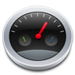
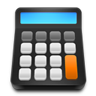

Create Your Own Dashboard Menu

Dashboard
E-Mail Client
Calendar
Geolocation
Sticky Note
AirPort

Calculator
Hint : Click plus symbol below
« Back to The Article
icons by Web Icon Set
More script and css style :
www.htmldrive.net